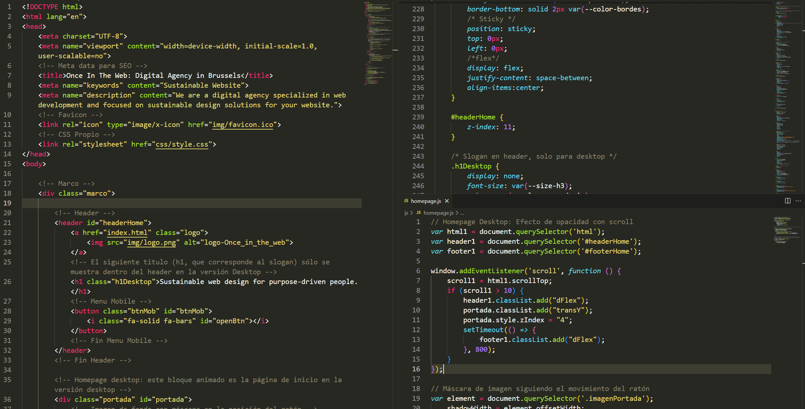

Sustainable web design for purpose-driven people.

Sustainable web design
for
purpose-driven
people.
Code and design in Brussels.
Sustainable web design
for purpose-driven people.
about
how
work
contact
About
The Process
Our Work
Contact